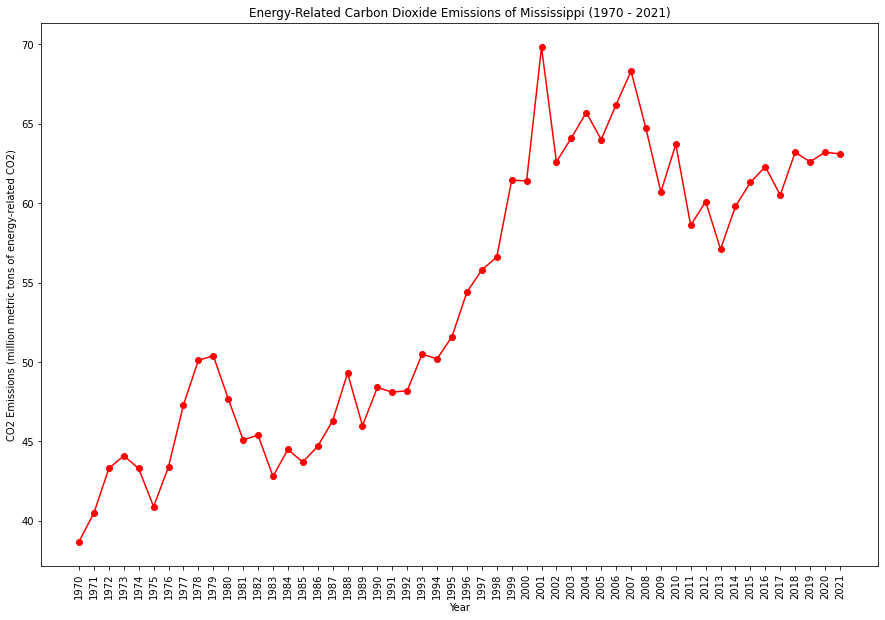
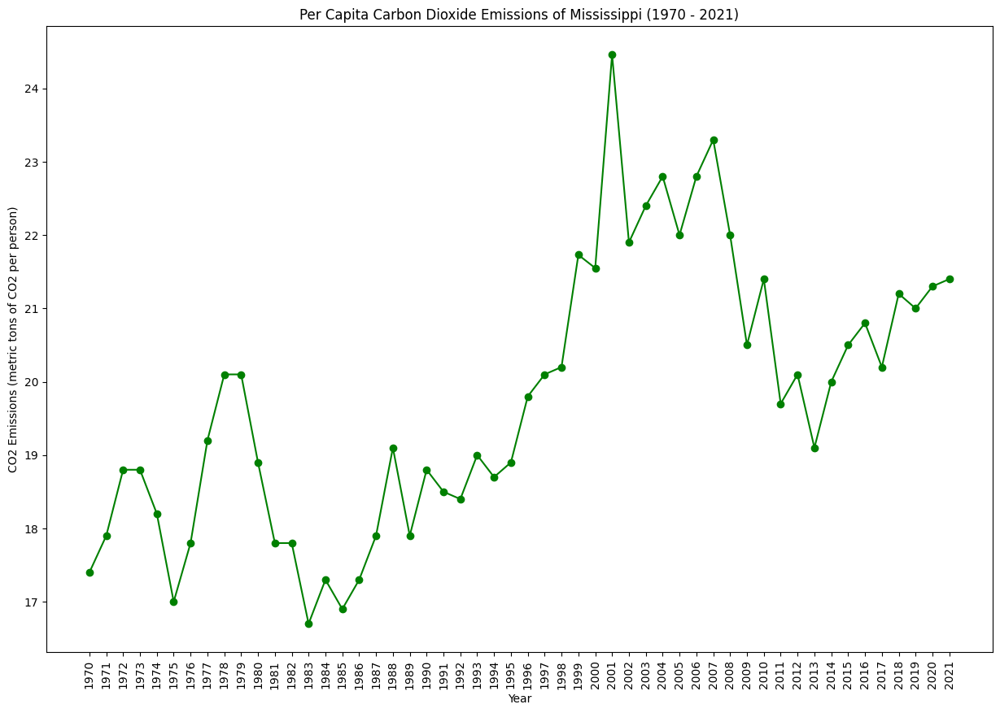
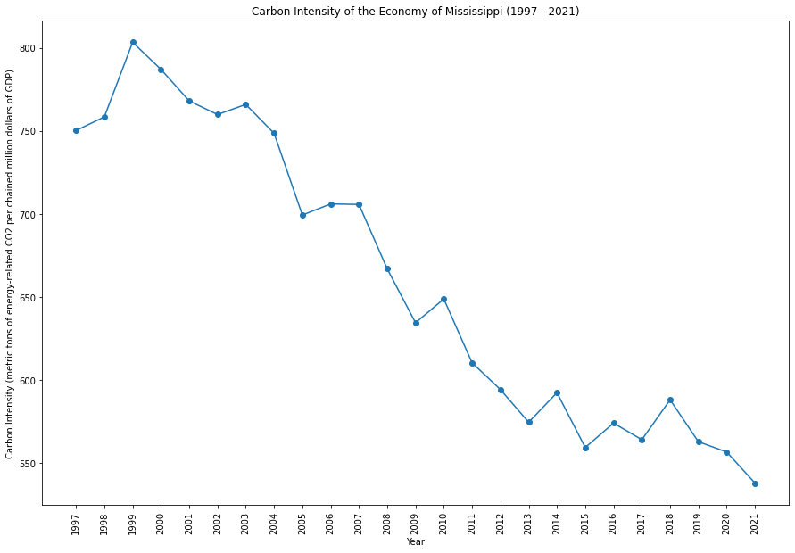
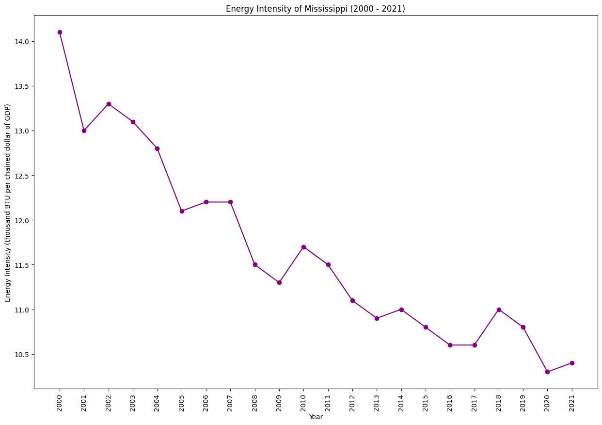

|  |  |
|  |  |
Mississippi has historically relied on fossil fuels for energy, with an emphasis on natural gas and coal. Efforts to diversify the energy mix and incorporate renewables are emerging. The state is addressing environmental concerns, including water quality, and exploring ways to balance economic interests with sustainable practices.